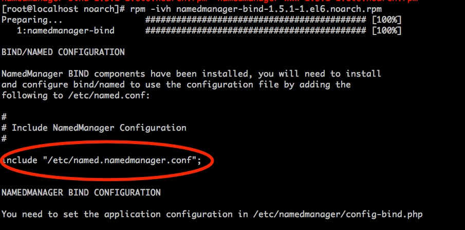

namedmanager
1.简介
NamedManager 是一个基于 Web 的 DNS 管理系统，可用来添加、调整和删除 DNS 的 zones/records 数据，支持 Bind 作为后端的 DNS 服务，支持 IPv4 和 IPv6。
2.用途
最简单直接的用途是在管理DNS记录上。添加删除更方便

3.安装和使用
本文是针对centos 6 系统为范本
下载包并安装。rpm包在rpm目录
安装namedmanager-www 管理界面
安装如下：
rpm -Uvh namedmanager-www-1.5.1-1.el6.noarch.rpm
[root@localhost noarch]# rpm -ihv namedmanager-www-1.5.1-1.el6.noarch.rpm
Preparing... ########################################### [100%]
1:namedmanager-www ########################################### [100%]
Reloading httpd...
Reloading httpd:
Run cd /usr/share/namedmanager/resources/; ./autoinstall.pl to install the SQL database.
cd /usr/share/namedmanager/resources/
./autoinstall.pl
输入mysql密码完成Sql 导入和配置文件生成。截图如下：

数据库部分参考:（已经安装并熟知的可以跳过）
安装数据库
yum -y install mysql-server
启动Mysql
service mysqld start
设置mysql密码
mysqladmin -u root password '123456
namedmanager配置文件如下：
/etc/namedmanager/config.php
<?php
$config["db_host"] = "localhost"; // hostname of the MySQL server
$config["db_name"] = "namedmanager"; // database name
$config["db_user"] = "namedmanager"; // MySQL user
$config["db_pass"] = "iv262niram6"; // MySQL password (if any)
$config["AUTH_METHOD"] = "sql";
?>
导入完成后可web管理:
https://xx.xx.xx.xx/namedmanager/index.php
默认用户名和密码分别为: setup 和setup123
接着设置API key 备用：

安装named-bind
安装bind
yum -y install bind
安装named-bind
[root@localhost noarch]# rpm -ivh namedmanager-bind-1.5.1-1.el6.noarch.rpm
Preparing... ########################################### [100%]
1:namedmanager-bind ########################################### [100%]
BIND/NAMED CONFIGURATION
NamedManager BIND components have been installed, you will need to install
and configure bind/named to use the configuration file by adding the
following to /etc/named.conf:
配置bind
在/etc/named.conf中添加如下：
include "/etc/named.namedmanager.conf";
重启bind
service named restart
截图:

参考文档
官方安装手册
https://projects.jethrocarr.com/p/oss-namedmanager/page/Installation-RPM/